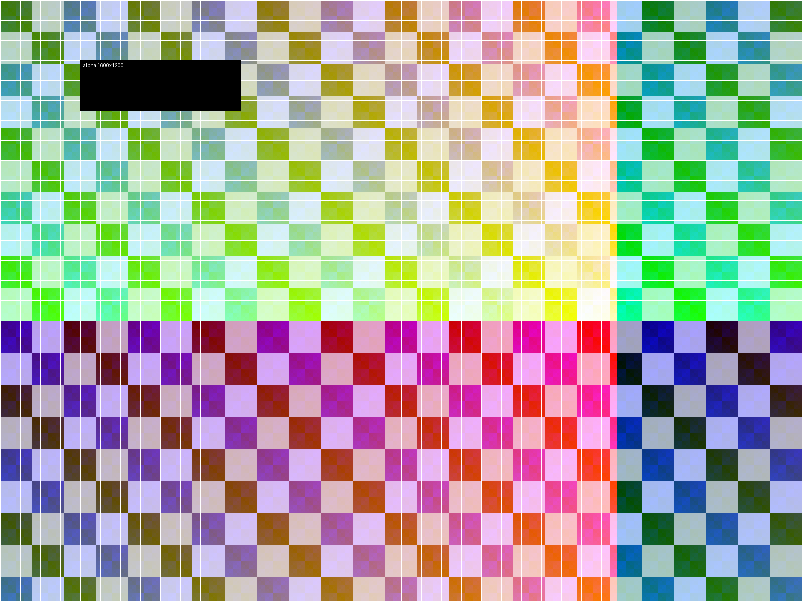
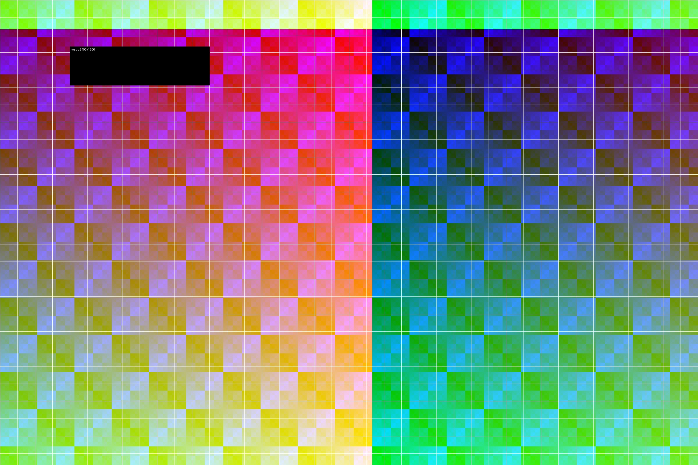
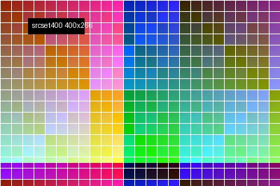
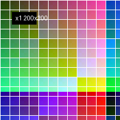
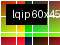

IDFTEXT selectable text inside an identity filter
MAINTOK JPEG 4000x3000 shown at 800px

PNG with alpha

WebP

srcset with w descriptors

srcset with x descriptors

picture with webp sources
image-set background
lazy data-src

low-quality placeholder

IDFTEXT selectable text inside an identity filter

native lazy image far below

IMGEND